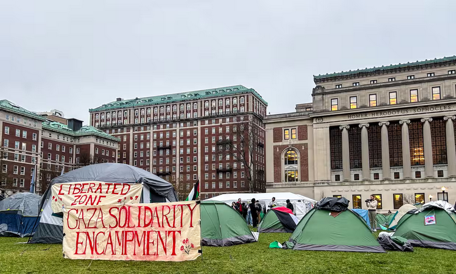
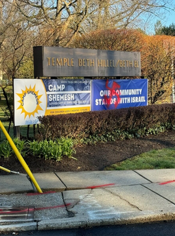

The West is Next — And What That Means For Us.
By: Benjamin Whitten
Published on April 24, 2024
The West is Next is a phrase now repeated all over the internet, as the war in Israel against Hamas unfolds. If Israel fails to defeat Hamas, Hezbollah, and other anti-semitic and anti-Western groups, they will move onto the next target- Europe and America. With riots and demonstrations slowly moving into violence, like at Columbia University, where Irsa Hirsi, daughter of congresswoman Ilhan Khan and other Pro-Palestinian students were encamped and protesting, until they were arrested by NYPD Riot Police.A photo taken on Social Media of the encampment (Source: Hyperallergic)
But what does this all mean? With these mounting tensions worldwide, we are being too slow to react. We are being to lenient, too kind. These protests are turning violent and hateful. A synagogue near me was vandalized recently with a Swastika spray-painted on a sign, several times. We are not doing enough to stop this. This is not just Anti-Zionism, but antisemitism and hatred. When we let this happen, no consideration for anything, we are letting ourself be damaged. We are contributing to our end. 
The graffiti in question at Temple Beth-Hillel-El in Wynnewood, PA. (Image by Metro Philadelphia)
What is the solution?
Logically, the solution would be deportation and punishment for crimes against the United States of America. But we have the First Amendment and the Bill of Rights, protecting violent protestors who burn American flags outside of buildings designed, built and paid for by Israelis and Jews. In any civilized and caring nation, this would be strictly handled. We are becoming weak, we are becoming unsafe. Jewish homes are hiding signs supporting Israel, painting over Mezuzahs, as they fear violent attacks against them by these “Anti-Zionist Protestors.” This is not just nationwide, too. At a Pro-Palestine rally and march in the UK, a person was told to conceal a Star of David necklace, as they were at risk of attack by the protestors. Is this not showing of the United Kingdom and United States' complicitness in violence against Israel and the Jews?
The “Line” between Anti Zionism and Antisemitism, along with by muslims.
This “line” is a topic often brought up by Pro-Palestinian protestors. Truth be told, there may be a small line. However, most Jews stand with Israel. This is a line often muddied, with Pro-Palestinian protestors commenting on and vandalizing Jewish delis, businesses, and families who posted online- or simply… existed. And semi-recently, I was playing a video game, when I met two Muslims. I thought it would be a good opportunity for inter-religion conversation and debates about similarities, differences, and the conflict. However, that didn’t happen. Instead, I was sent photos and videos published by Hamas of Israelis being lined up and slaughtered. Not quite the “Religion of Peace,” eh?